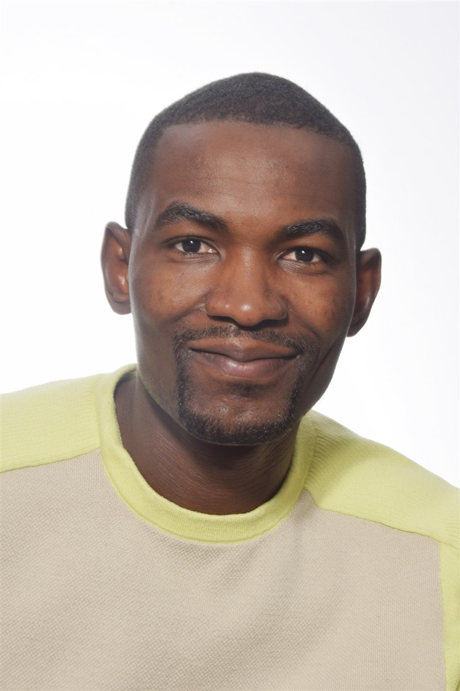

Ingénieur en géomatique et analyste de données géospatiales, avec une solide expérience en SIG, analyse spatiale, photogrammétrie, modélisation 3D et réseaux télécoms. Compétent en Python, SQL et solutions ArcGIS, je possède également une expertise en analyse fonctionnelle, gestion de données et automatisation des processus géospatiaux. Rigoureux, analytique et orienté solutions, je sais traduire les besoins métiers en solutions techniques efficaces et collaborer avec des équipes pluridisciplinaires pour mener à bien des projets innovants.

De la capture terrain par drone jusqu'au jumeau numérique d'un réseau fibre : une chaîne de compétences complète autour de la donnée spatiale.
À propos de ces réalisations. Les applications et cartes réalisées pour ce site sont des projets personnels, présentés à titre indicatif. Elles reposent uniquement sur des données en libre accès (open data publiques, OpenStreetMap, imagerie satellitaire ouverte), citées dans la fiche de chaque projet. Les publications scientifiques renvoient à leur éditeur d’origine. Mes missions professionnelles sont seulement décrites : aucune donnée, carte ou livrable appartenant à un employeur ou à un client n’est publié sur ce site.
Des missions de terrain en RDC aux réseaux télécom en Belgique : plus de 9 ans au service de la donnée géospatiale.
Des prestations sur mesure pour entreprises, opérateurs réseau, bureaux d'études et organisations internationales.
Une formation académique en Belgique, en Égypte et en RDC, complétée par des certifications ESRI et des bourses internationales. Diplômes obtenus hors Belgique reconnus par équivalence de la Fédération Wallonie-Bruxelles.
Un poste, une mission SIG, un projet de jumeau numérique ou de modélisation 3D ? Basé à Bruxelles, je travaille en français, en anglais et j'ai des notions de néerlandais.